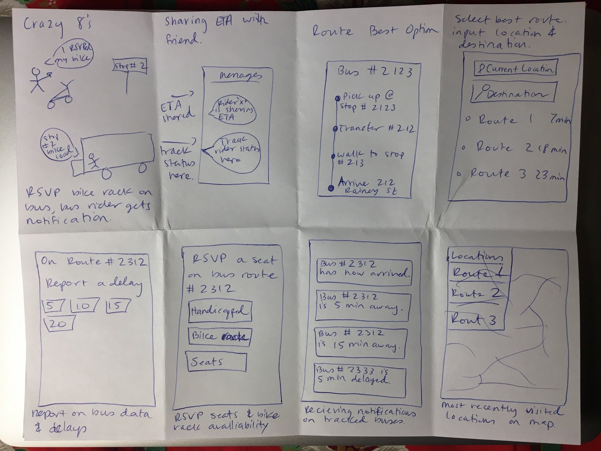
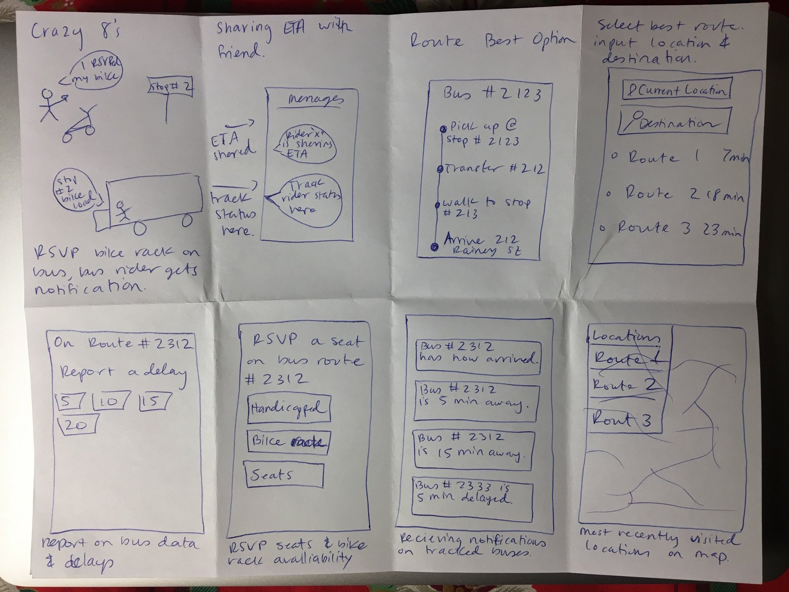

plan
After identifying that the app inefficiently conveys information, I decided to ask potential users of the Austin CapMetro app what their current frusterations were with the existing app and what features they were looking for.
I asked users a series of questions to better understand their transportation behavior. View Interview Questions Here.
Once initial insight to the current problems that exist within the CapMetro app was collected, users were tasked to login within the current application and perform different tasks to help identify interface issues and identify needed features.
Perform these tasks:
- Open app and input a route from point A to point B.
- View different route options.
- Select preferred route and share ride with a contact.
- Track buses in your current location.
- Buy a single pass ticket.
existing application critique
Shown is the current workflow for performing these actions within the existing CapMetro app that stands, and listed below are my critiques.
To summarize the findings, the current app is not well designed for mobile use, and offers countless ways to accomplish the same task, which creates confusion for users.


gaining perspective: personas & user journey map


 
